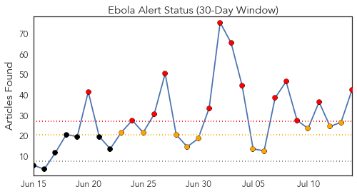
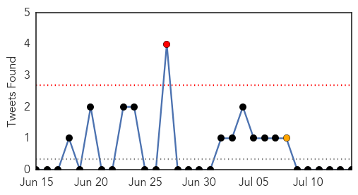
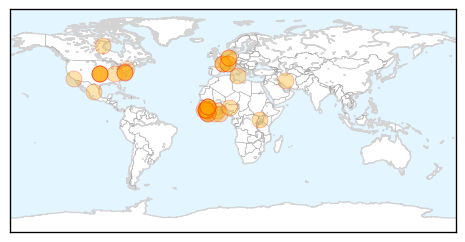
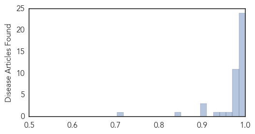

Toggle navigation
Early Warning
Daily Alerts
Ebola
Jul 14, 2014
30 Day Trends
Web: 13
alerts
, 10
warnings
Twitter: 1
alerts
, 1
warnings
Top Articles:
1.000
Ebola crisis in West Africa deepens; 500+ dead
1.000
Ebola outbreak now most deadly ever in West Africa
1.000
African Heads Discuss Dangerous Ebola
1.000
Deepening Ebola crisis blamed on 'gross misjudgment'
1.000
Ebola virus has killed 539 -- the largest outbreak on record
1.000
Ebola virus outbreak in Techiman is imminent
1.000
Ebola crisis in West Africa deepens; 500+ dead
1.000
Ebola outbreak in West Africa difficult to contain
1.000
More Than 500 Dead As Ebola Crisis Deepens In West Africa
1.000
Press Release on the Ebola Virus disease epidemic in Liberia, July 10, 2014. - Liberia
1.000
Ebola crisis in West Africa deepens 500 dead
1.000
Ebola medics fight mistrust in W Africa
0.999
Germany implements Ebola emergency plan
0.999
Ebola medics fight mistrust, hostility across West Africa
0.999
As Ebola stalks West Africa, medics fight mistrust, hostility
0.999
Sierra Leone samples: Ebola evidence in West Africa in 2006
0.999
Germany implements Ebola emergency plan
0.999
Ebola Crisis in West Africa Worsens, Kills More Than 500
0.999
Sudan Vision Daily
0.998
Sierra Leone Samples Show Ebola Virus Circulating in West Africa Since 2006
0.998
More than 500 dead as West Africa Ebola virus crisis deepens
0.995
US bioterror fears are driving Ebola drug development
0.995
Ebola Epidemic Strikes West Africa
0.993
Ebola-Remembering the Rural Folks
0.981
West Africans Shunning Ebola Virus Healthcare due to Mistrust, Superstition
0.980
2 firefighters hurt battling weekend house fires
0.980
Sen. Cardin Stops In Baltimore On His Made in Maryland Jobs Tour
0.980
Pressure for ceasefire grows in week-old Gaza war
0.980
Le jour de gloire est arrive': Bastille Day at Baltimore's Petit Louis is Monday
0.980
Vacant Army facility no longer in running to house children who crossed US border
0.980
WEATHER BLOG: Severe Weather
0.980
Md. Candidate Donates Dinosaur To Creation Museum
0.980
Baltimore Tech Startup Receives Massive Grant
0.979
GOP Congressman Who Warned About Unvaccinated Migrants Opposed Vaccination
0.976
Ebola: The Origin of West Africa’s Deadly Epidemic
0.967
As Ebola stalks West Africa, medics fight mistrust, hostility
0.952
Fears grow over latest Ebola outbreak
0.928
Steller: Tucson doctors push baseless migrant-disease hysteria
0.903
Ivorian refugees stopped from returning home over Ebola fears
0.903
Ivorian refugees stopped from returning home over Ebola fears
0.899
Ivorian refugees stopped from returning home over Ebola fears - Côte d'Ivoire
0.839
Ivorian refugees stopped from returning home over Ebola fears
0.703
The Modern Hospital Doctors and the Deadly but Quiet Epidemic in America
Top Tweets:
No tweets found for Jul 14, 2014
Web/News Articles

Tweets

Article Locations

Article Confidences
